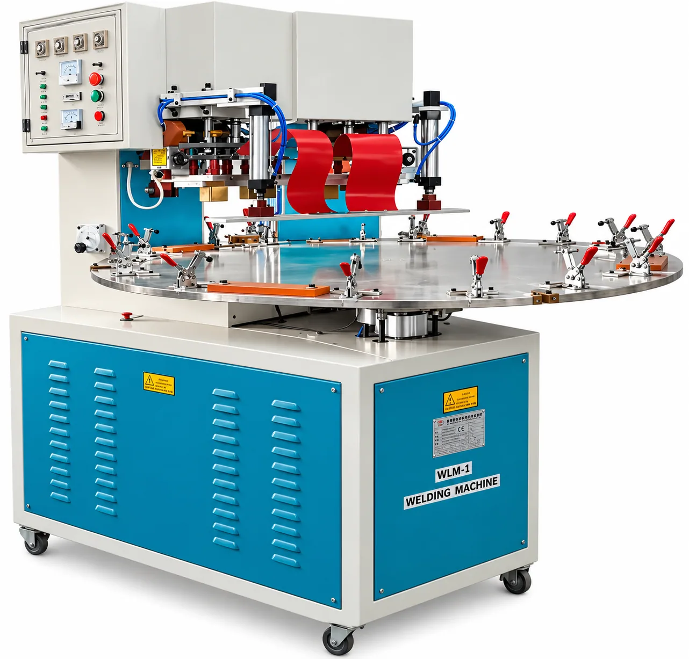

ATC PRESENTATION IMAGE
ATC PRESENTATION IMAGEPROCESS 01 / 05
Injection Molding
Precision plastic components manufactured using injection molding technology.
ANNUAL CAPACITY500 MT / annum
EXPLORE THIS PROCESS ↗Discover each of ATC Industries' processing capabilities. Machine specifications and additional photography will be added as they are supplied and verified.
ATC PRESENTATION IMAGEPrecision plastic components manufactured using injection molding technology.
 ATC PRESENTATION IMAGE
ATC PRESENTATION IMAGEProduction of plastic profiles and sheets for application-specific requirements.
 ATC PRESENTATION IMAGE
ATC PRESENTATION IMAGEThermoforming and vacuum forming processes for shaped plastic parts.
 ATC PRESENTATION IMAGE
ATC PRESENTATION IMAGEBlow molding capabilities for suitable hollow plastic components.
 ATC PRESENTATION IMAGE
ATC PRESENTATION IMAGECutting and high-frequency plastic welding for application-specific fabrication and assembly.
Share your requirements with our team to discuss the right manufacturing approach.
REQUEST A QUOTE ↗ATC Industries manufacturing and product photographs supplied from the company presentation.



Explore ATC Industries’ machinery and product capabilities.
Explore representative product families and the processing technologies used to manufacture them.